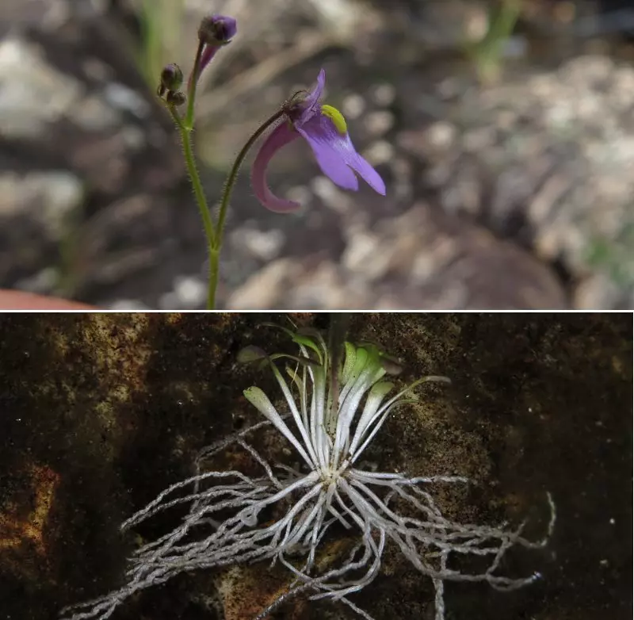

Pesquisadores da Unesp, em Jaboticabal (SP), publicaram um artigo no periódico científico PLOS ONE em que revelam ter descoberto uma nova espécie de planta carnívora. O curioso: os cientistas denominaram a planta Genlisea hawkingii, em homenagem ao físico britânico Stephen Hawking, falecido em 2018. O tributo foi motivado pela inspiração que Hawking representou para muitas pessoas, fossem elas leigas ou cientistas.
A planta, natural do Cerrado, foi encontrada há cerca de dois anos na cidade de Delfinópolis, em Minas Gerais, e revelada no último dia 15. Até agora, esse foi o único local em que o vegetal foi visto, o que indica que a espécie está em situação de fragilidade: presente em poucos lugares (e nenhum deles faz parte de unidades de conservação), a planta pode ser extinta.
Deve-se levar em consideração também o fato de que o Cerrado está passando por um período de grande destruição, motivada sobretudo por questões econômicas ligadas à agricultura e à pecuária. Assim, as razões para se preocupar com a sobrevivência da Genlisea hawkingii são ainda mais urgentes. 
Embora essa espécie tenha sido descoberta só agora, o gênero Genlisea é antigo conhecido da ciência. Sendo que os vegetais dessa categoria costumam ser carnívoros — traço muito mais raro em plantas do que em animais. Além disso, eles possuem os genomas menos alongados já conhecidos dentre as plantas.